Start anywhere.
I will tell you where it goes.
This is not the catalogue. The catalogue is at archive.kyleparkercunningham.com — every work, every measurement, every provenance line, and it is much better than this page at answering a question. This page is for the other thing: a small number of marked routes through fifteen years of work, and one season that is happening right now.
The seasonopens at the solstice, retires at the equinox
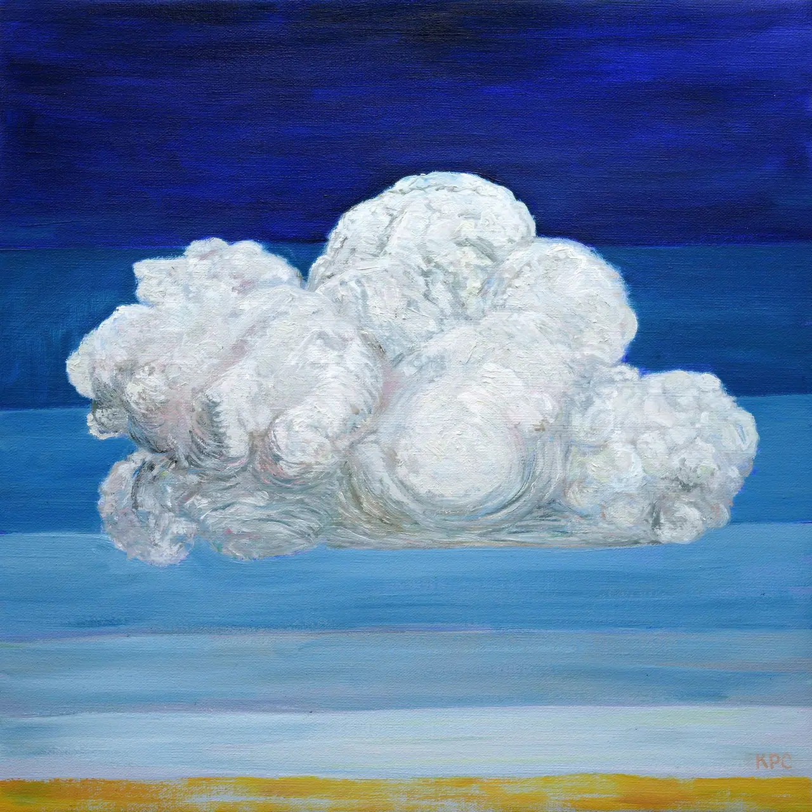
Everything That
Can Be Carried
The studio loses its walls. A summer spent finding out whether the whole operation — paintings, a press, a bindery — can be carried, and keep working from anywhere. Filed under Survival Notes from the Near Future.
Three routes through the workpick one · 5–15 minutes


The Juniper Trail
One tree, drawn again and again. The route to take if you want to understand patience as a subject rather than a virtue.


Survival Notes
Animals in breathing apparatus, machines grazing, mutual aid by airship. Neither utopia nor collapse — a lot of improvised gear.


The Memory of Atmosphere
Lightning kept in a jar, water vapour solved as algebra, the sky with the ground taken out from under it.
What he came back to28 pairs in the catalogue
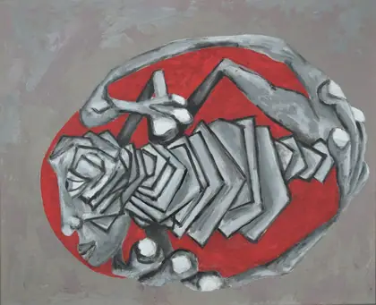
8 years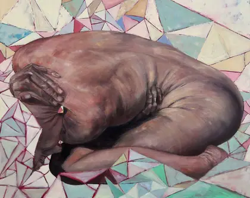
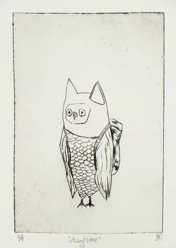
7 years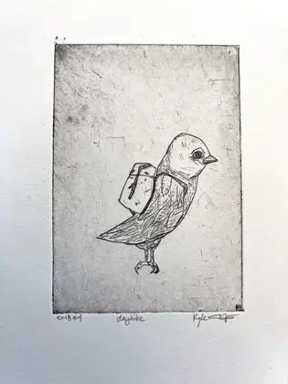
The whole catalogue, by colour155 works · measured, not chosen
Ordered by the dominant hue measured off each photograph. It is the single cheapest thing the archive gives away and the most surprising: the practice is one continuous spectrum, heavy in ochre and teal, thin in violet.
Every band is a link into the archive's own facets. The site suggests; the catalogue answers.
Most recent2024 · newest first
| Work | Discipline | Medium | Size | |
|---|---|---|---|---|
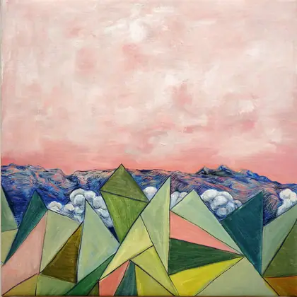 | above the clouds 2024 | Painting | Oil on Linen | — |
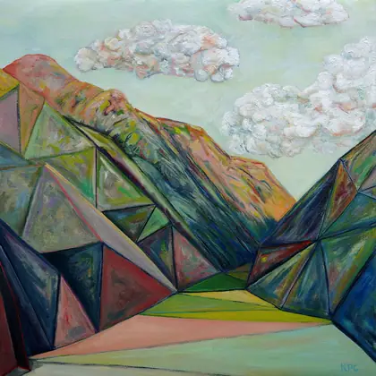 | alpenglow at mineral creek with the adults after the babies have gone to sleep 2024 | Painting | Oil on Linen | — |
| bottled lightning 2024 | Painting | Oil on Linen | — |
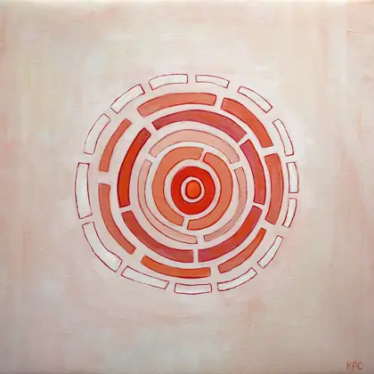 | does math control nature? 2024 | Painting | Oil on Linen | — |
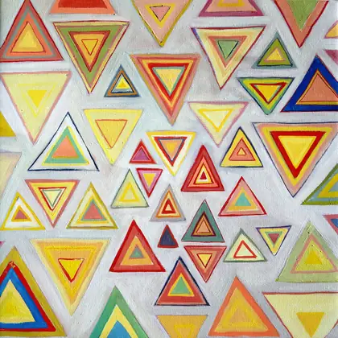 | equilateral equilibrium 2024 | Painting | Oil on Linen | — |
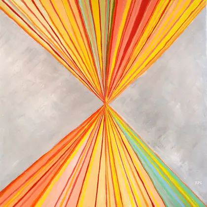 | felt and lived 2024 | Painting | Oil on Linen | — |
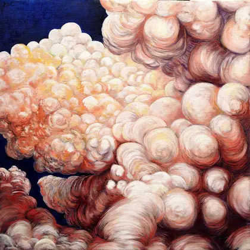 | low angle sun rays 2024 | Painting | Oil on Linen | — |
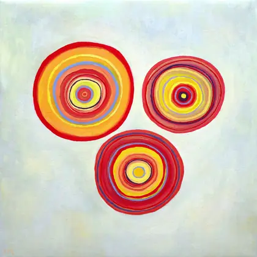 | orbits (plankton dreaming of a sedimentary afterlife) 2024 | Painting | Oil on Linen | — |
— in the size column means not yet measured. Sixty of the hundred and fifty-five are still unmeasured, and the ledger says so rather than leaving the column out.